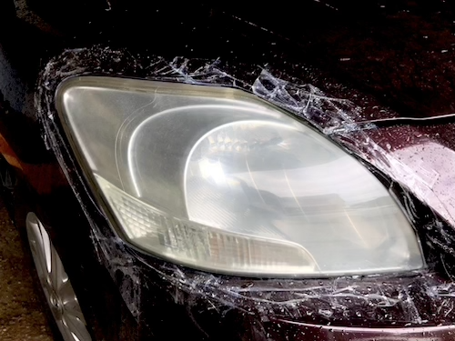

DIY Headlight Renovation
Today, I want to share with you how to restore your headlights using a GETSUN headlight renovation kit. I bought it from Mr.DIY and it was 69 THB. So it’s worth trying at home.
I’m doing it in the middle of a rainy season when you don’t usually get a desired outcome mostly because of the humidity. I would recommend you to try this process when it is not raining or less humid.
The concept of headlight renovation is abrasion. Almost all of the steps in headlight renovation include usage of abrasive materials. And of course, rubbing with sandpaper produces dust.To protect yourself from inhaling dust and to keep the entire process tidy, spray water before, during and after rubbing with sandpaper.
The package includes -
- a piece of 500 grit sandpaper
- a piece of 800 grit sandpaper
- a piece of 1200 grit sandpaper
- a piece of 2000 grit sandpaper
- a non-woven towel
- a foam
- a 30ml bottle of silica resin
This is the look of the headlight before starting the renovation.
Here are the steps
- Make sure you cover up the surroundings of the headight. Use tape or masking paper whatever available.
- Spray headlight with water.
- Start with 500 grit sandpaper. Fold it in half so that you could one half for one headlight.
- Rub the headlight with sandpaper. Make sure you apply adequate pressure while rubbing and rub evenly in circular motion across the surface of the headlight. Make sure you rub and spray with water at the same time to produce less dust.
- This is what it looks like after rubbing with 500 grit. Repeat the same step with 800 grit sandpaper.
- This is after rubbing with 800 grit.
- This is after rubbing with 1200 grit.
- Then after 2000 grit. The finer the grit, the headlight’s surface will get more shiny. If a cetain area remained opaque or less shiny, you can repeat the above steps.
 - Rub the headlight with the wool side of the foam to make it least scratchy.
- Clean the headlight with soap and water.
- Dry it with a paper towel.
- This is what is looks like when it is dry. It may look more opaque and worse than what it is before. But it’s okay.

- Wrap the foam with non-woven towel. Drop the silica resin liquid on it.
- Gently wipe the headlight with the towel. Make sure you do it evenly all over the surface.
- This is what it looks like after applying with the product. Leave it air dry. You can repeat applying with the silica resin product 2-3 times until you get the desired outcome.
- This is after repeating the same steps on the other headlight.
- Please make sure not to wet the headlights with water for 48 hours after the process. Otherwise, you might need to repeat the steps all over again.
Thanks for reading. If you found a better product or a hack, please leave a comment by sending email.